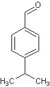
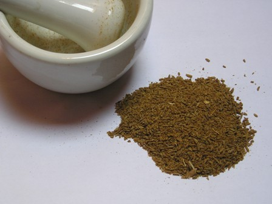
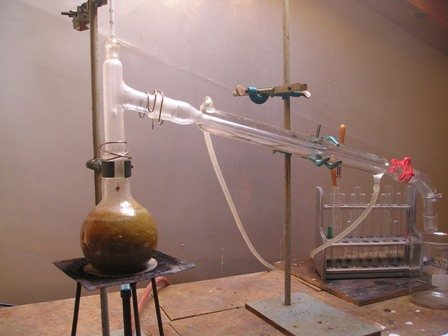
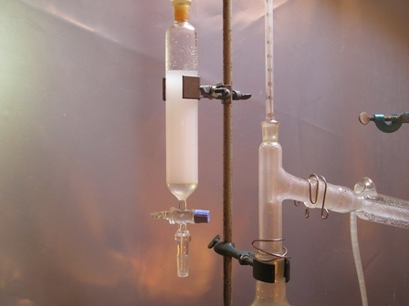
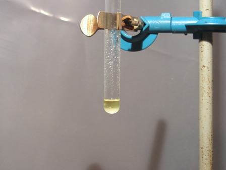

Qualcuno ha nell'orto il cumino?
Non credo... Almeno nel mio di sicuro non c'è... che pure, quand'è stagione, è discretamente fornito. Ma ho tutta roba "normale", niente di esotico.
Il cumino è una pianticella erbacea di origine orientale della famiglia delle ombrellifere (come l'anice, il finocchio, il prezzemolo, ecc.) con dei piccoli semi oblunghi simili a quelli delle altre piante della famiglia.
Solo due parole sull'uso di questa pianta: nella cucina indiana è uno degli ingredienti fondamentali del curry, mentre nella nostra gastronomia viene riservata perlopiù a preparazioni di "polveri" per insaporire le carni.
Avendo un po' di tempo a disposizione, ho provato l'estrazione del principio aromatico contenuto nei semi del cumino.
Questo principio aromatico è appunto un'aldeide aromatica (stavolta in senso chimico, non in senso culinario!), e precisamente la 4-isopropilbenzaldeide, detta più comunemente cuminaldeide.
Oggi è lei la nostra protagonista:

- Procurarsi un po' di semi di cumino non è difficile, basta una bella drogheria come quelle di una volta (come nel mio caso) oppure un negozio di spezie decentemente fornito.
Ne ho comprati 50 g, 35 destinati ad essere sacrificati sull'altare della... scienza (!), e 15 tenuti per migliori fini aromatizzanti e mangerecci.
Ecco come ho proceduto per strappare a gran fatica quel poco di molecola odorosa che i piccoli semini cercavano di trattenersi con tutte le loro forze.

- macinare i semi di cumino in un mortaio; sono resistenti, ma insistere quanto basta fino a renderli una farina discretamente sottile. Questa operazione permette anche di pregustare ampiamente il buon profumo della cuminaldeide che andremo ad estrarre.
- mettere i semi macinati assieme a 400 ml d'acqua in un pallone da 500 ml e predisporre per la distillazione con refrigerante Liebig e relativi accessori.Portare a ebollizione, badando che non ci sia schiumeggiamento che risale il collo del pallone; la separazione dell'aldeide avviene per distillazione in corrente di vapore, che può essere condotta anche in questo modo più semplice senza ricorrere al secondo pallone come generatore di vapore.
Nel nostro caso il vapore che si genera durante l'ebollizione è sufficiente a trascinare il prodotto in seno all'acqua che distilla (che infatti apparirà leggermente lattescente).
- continuare la distillazione fino a raccogliere circa 300 ml di liquido, rabboccando ogni tanto dal foro del termometro per tenere il livello dell'acqua nel pallone abbastanza costante.

- porre il liquido distillato in un imbuto separatore ed estrarre con almeno 5/6 porzioni da 10 ml ciascuna di cloruro di metilene CH2Cl2, sbattendo bene e lasciando lentamente decantare.Riunire tutte le porzioni del solvente in una beuta e anidrificare con l'opportuna quantità di CaCl2 o Na2SO4.
Separare dai sali ed evaporare tutto il solvente riscaldando il liquido a bagnomaria in una capsulina.
Rimane alla fine un residuo di cuminaldeide (p.e. 235°) sotto forma di un liquido oleoso limpido con lieve tonalità giallina, dal forte odore particolare, che richiama il cumene, del quale avevo già parlato.
Il profumo non è proprio descrivibile, se non dire che è delicato ma molto speziato; insomma, sa proprio di... cumino!
Purtroppo la resa è stata scandalosamente modesta, come si può vedere nel fondo della provettina, ma in ordine con l'esiguo contenuto di isopropilbenzaldeide del materiale di partenza.

Naturalmente il cumino contiene come al solito molte altre sostanze aromatiche oltre alla cuminaldeide, ma per la grande preponderanza che ha quest'ultima e per la procedura di estrazione, per i nostri scopi possiamo ritenere l'estratto come sufficientemente puro.
Se la resa fosse stata un po' più elevata avrei provato a caratterizzare trasformandola nel semicarbazone per trattamento con semicarbazide cloridrato.
Data la situazione è un'operazione che non farò; mi accontento di aver visto quest'aldeide e averne sentito il profumo.
Siete di quelli terrorizzati dalla parola "chimica"? Giammai "prodotti chimici" sulla vostra tavola?
Beh, se avete nell'orto il cumino (o se avete qualsiasi altra cosa...), non c'è niente da fare: siete anche voi produttori di ignobili sostanze chimiche!
Anzi, stavolta state gustando con soddisfazione, senza saperlo, niente di meno che della spregevole 4-ISOPROPILBENZALDEIDE!
Passato l'appetito? A me no... è aumentato!
2 commenti